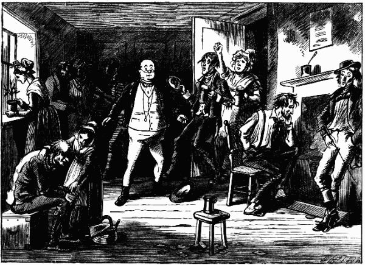
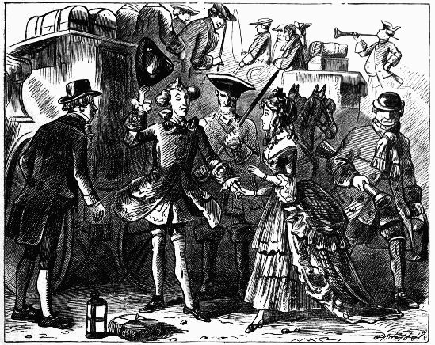
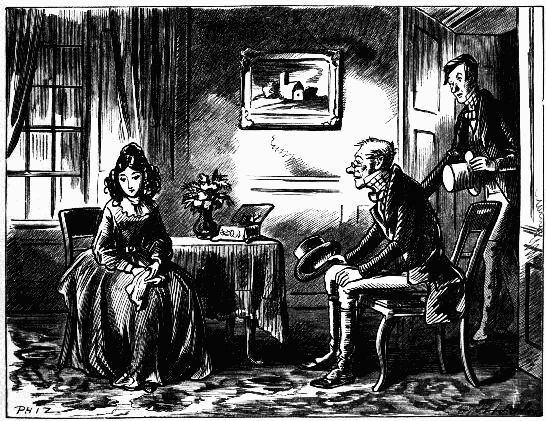
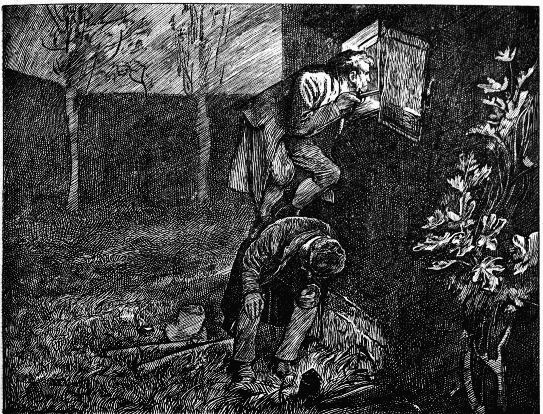
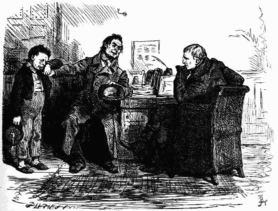
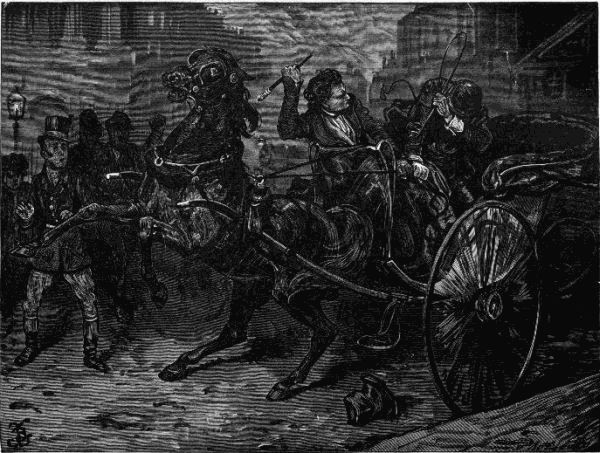

Sam looked at the fat boy with great astonishment, but without saying a word—Chap. xxviii.
Before Mr. Pickwick distinctly knew what was the matter, he was surrounded by the whole body, and kissed by every one of them—Chap. xxviii.
Seated on an upright tombstone, close to him, was a strange unearthly figure—Chap. xxix.
Mr. Pickwick . . . . went slowly and gravely down the slide, with his feet about a yard and a quarter apart, amidst the gratified shouts of all the spectators—Chap. xxx. 
 A little fierce woman bounced into the room, all in a tremble with passion, and pale with rage—Chap. xxxii.
A little fierce woman bounced into the room, all in a tremble with passion, and pale with rage—Chap. xxxii.
With a countenance greatly mollified by the softening influence of tobacco, requested him to "fire away"—Chap. xxxiii.
Before Sam could interfere to prevent it, his heroic parent had penetrated into a remote corner of the room, and attacked the Reverend Mr. Stiggins with manual dexterity—Chap. xxxiii.
An admonitory gesture from Perker restrained him, and he listened to the learned gentleman's continuation with a look of indignation—Chap. xxxiv.
Poor Mr. Pickwick! he had never played with three thorough-paced female card-players before—Chap. xxxv.
He no sooner heard the horrible threat of the valorous Dowler, than he bounced out of the sedan—Chap. xxxvi.
 Mr. Tuckle, dressed out with the cocked-hat and stick, danced the frog hornpipe among the shells on the table—Chap. xxxvii.
Mr. Tuckle, dressed out with the cocked-hat and stick, danced the frog hornpipe among the shells on the table—Chap. xxxvii.
Mr Bob Sawyer's boy . . . peeped through the glass door, and thus listened and looked on at the same time—Chap. xxxviii. 
 "Unlock that door, and leave this room immediately, sir," said Mr. Winkle—Chap. xxxviii.
"Unlock that door, and leave this room immediately, sir," said Mr. Winkle—Chap. xxxviii.
"My dear," said Mr. Pickwick, Looking over the wall, and catching sight of Arabella on the other side. "Don't be frightened, my dear, 'tis only me"—Chap. xxxix.
Mr. Pickwick sitting for his portrait—Chap. xl.
 Letting his hat fall on the floor, he stood perfectly fixed and immovable with astonishment—Chap. xlii.
With this, the speaker snatched that article of dress from Mr. Pickwick's head—Chap. xli.
Sam, having been formally introduced . . . . as the offspring of Mr. Weller, of the Belle Savage, was treated with marked distinction—Chap. xliii.
"Do you always smoke arter you goes to bed, old cock?" inquired Mr. Weller of his landlord, when they had both retired for the night—Chap. xliv.
Mr. Stiggins, getting on his legs as well as he could, proceeded to deliver an edifying discourse for the benefit of the company—Chap. xlv.
Mrs. Bardell screamed violently; Tommy roared; Mrs. Cluffink shrunk within herself and Mrs. Sanders made off without more ado—Chap. xlvi.
Mr. Pickwick could scarcely believe the evidence of his own senses—Chap. xlvii.
These attentions were directed, not towards him, but to a young lady who just then appeared at the foot of the steps—Chap. xlix. 
Mr. Bob Sawyer was seated: not in the dickey, but on the roof of the chaise—Chap. l.
Snatching up a meal-sack, effectually stopped the conflict by drawing it over the head and shoulders of the mighty Pott—Chap. ii.
Suddenly aware that he was in the presence of a stranger, Mr. Ben Allen advanced—Chap. l.
It was a still more exciting spectacle to behold Mr. Weller . . . . immersing Mr. Stiggins's head in a horse-trough full of water, and holding it there until he was half suffocated—Chap. lii.
"I say insolent familiarity, sir," said Mr. Pickwick, turning upon Fogg with a fierceness of gesture which caused that person to retreat towards the door with great expedition—Chap. liii.
"I say, how nice you look!"—Chap. liv.
The mottled-faced gentleman reviewed the company, and slowly lifted his hand—Chap. lv.
 The words were scarcely out of the old gentleman's lips, when footsteps were heard ascending the stairs—Chap. lvi.
THE ADVENTURES OF
OLIVER TWIST
TWENTY-EIGHT ILLUSTRATIONS
BY J. MAHONEY
Oliver asks for more—Chap. ii.
"Liberal terms, Mr. Sowerberry, liberal terms!"—Chap. iv.
Oliver rather astonishes Noah—Chap. vi.
"Hullo, my covey! What's the row?"—Chap. viii.
"Stop thief!"—Chap. x.
"What's become of the boy?"—Chap. xiii.
"You are on the scent, are you, Nancy?"—Chap. xv.
"A beadle! A parish beadle, or I'll eat my head"—Chap. xvii.
The boy was lying fast asleep, on a rude bed upon the floor—Chap. xix.
Sikes, with Oliver's hands still in his, softly approached the low porch—Chap. xxi.
"Directly I leave go of you, do your work. Hark!"—Chap. xxii. 
"Fagin!" whispered a voice close to his ear—Chap. xxvi.
"Don't sigh, Mrs. Corney," said Mr. Bumble—Chap. xxvii.
"Just send somebody out to relieve my mate, will you, young man?"—Chap. xxxi.
When it became quite dark, and they returned home, the young lady would sit down to the piano, and play some pleasant air—Chap. xxxii.
Looking round, he saw that it was a post-chaise, driven at great speed—Chap. xxxiv.
A "few—a very few—will suffice, Rose," said the young man, drawing his chair towards her—Chap. xxxv.
"Were you looking for me," he said, "when you peered in at the window?"—Chap. xxxvii.
The evidence destroyed—Chap. xxxviii.
Then, stooping softly over the bed, she kissed the robber's lips—Chap. xxxix.
 "Look there! Those are the lights of London"—Chap. xlii.
"Look there! Those are the lights of London"—Chap. xlii.
"What is this?" inquired one of the magistrates. "A pick-pocketing case, your worship"—Chap. xliii.
When she was about the same distance in advance as she had been before, he slipped quietly down, and followed her again—Chap. xlvi.
He moved, backward, towards the door: dragged the dog with him—Chap. xlviii.
And creeping over the tiles, looked over the low parapet—Chap. l.
"Do you know the young lady, sir?"—Chap. li.
He sat down on the stone bench opposite the door—Chap. lvi.
FIFTY-NINE ILLUSTRATIONS
BY FRED BARNARD
Ralph Nickleby and Newman Noggs—Chap. ii.
The Uncle and Nephew looked at each other for some seconds without speaking—Chap. iii.
The schoolmaster and his companion looked steadily at each other for a few seconds, and then exchanged a very meaning smile—Chap. iv.
"Snubs and Romans are plentiful enough, and there are flats of all sorts and sizes when there's a meeting at Exeter Hall"—Chap. v.
"Very glad to make your acquaintance, Miss," said Squeers, raising his hat an inch or two—Chap. v.
On the opposite side of the fire, there sat with folded arms a wrinkling hideous figure—Chap. vi.
The first class English spelling and philosophy—Chap. viii.
"Pain and fear, pain and fear for me, alive or dead. No hope, no hope!"—Chap. viii.
Kate walked sadly back to their lodgings in the Strand—Chap. x.
"Oh! as soft as possible, if you please"—Chap. ix.
"Wretch," rejoined Nicholas fiercely, "touch him at your peril! I will not stand by, and see it done. My blood is up, and I have the strength of ten such men as you"—Chap. xiii.
"I can—not help it, and it don't signify," sobbed Mrs. Kenwigs. "Oh! they're too beautiful to live, much too beautiful!"—Chap. xiv.
There came into the office an applicant in whose favour he immediately retired, and whose appearance both surprised and interested him—Chap. xvi.
"I don't forget you, my soul, and never shall, and never can," said Mantalini, kissing his wife's hand and grimacing aside to Miss Nickleby, who turned away—Chap. xvii.
"A miserable wretch," exclaimed Mr. Knag, striking his forehead. "A miserable wretch"—Chap. xviii.
 "I am afraid you have been giving her some of your wicked looks, my lord," said the intended—Chap. xviii.
"I am afraid you have been giving her some of your wicked looks, my lord," said the intended—Chap. xviii.
But the young lady making a violent effort to disengage herself, he lost his balance, and measured his length upon the ground—Chap. xix.
The dressing-room door being hastily flung open, Mr. Mantalini was disclosed to view, with his shirt collar symmetrically thrown back: putting a fine edge to a breakfast knife by means of his razor strop—Chap. xxi.
"You can just give him that ere card, and tell him if he wants to speak to me, and save trouble, here I am, that's all"—Chap. xxi.
Mr. Crummles looked, from time to time, with great interest at Smike, with whom he had appeared considerably struck from the first. He had now fallen asleep, and was nodding in his chair—Chap. xxii.
The Indian savage and the maiden—Chap. xxiii.
"As an exquisite embodiment of the poet's visions, and a realisation of human intellectuality, gilding with refulgent light our dreamy moments, and laying open a new and magic world before the mental eye, the drama is gone, perfectly gone," said Mr. Curdle—Chap. xxiv.
"Nickleby," said his client, throwing himself along the sofa on which he had been previously seated, so as to bring his lips nearer to the old man's ear, "what a pretty creature your niece is!"—Chap. xxvi.
Sir Mulberry Hawk and his friend exchanged glances over the top of the bonnet—Chap. xxvi.
"I see how it is," said poor Noggs, drawing from his pocket what seemed to be a very old duster, and wiping Kate's eyes with it as gently as if she were an infant—Chap. xxviii.
"But they shall not protect ye!" said the tragedian, taking an upward look at Nicholas, beginning at his boots and ending at the crown of his head—Chap. xxix. 
Mr. Snevellicci repeated the wink, and, drinking to Mrs. Lilyvick in dumb-show, actually blew her a kiss—Chap. xxx.
Lashing himself up to an extraordinary pitch of fury, Newman Noggs jerked himself about the room with the most eccentric motion ever beheld in a human being—Chap. xxxi.
 "Look at them tears, Sir!" said Squeers with a triumphant air, as master Wackford wiped his eyes with the cuff of his jacket; "there's oiliness"—Chap. xxxiv.
 Sir Mulberry, shortening his whip, applied it furiously to the head and shoulders of Nicholas. It was broken in the struggle: Nicholas gained the heavy handle, and with it laid open one side of his antagonist's face from the eye to the lip—Chap. xxxii.
Night found him, at last, still harping on the same theme, and still pursuing the same unprofitable reflections—Chap. xxxiv.
"I'm not coming an hour later in the morning, you know," said Tim, breaking out all at once, and looking very resolute. "I'm not going to sleep in the fresh air—no, nor I'm not going into the country either"—Chap. xxxv.
With this the doctor laughed; but he didn't laugh half as much as a married friend of Mrs. Kenwigs's, who had just come in from the sick chamber—Chap. xxxvi.
"Ye'es," said the other, turning full upon him. "If you had told him who you were: if you had given him your card, and found out, afterwards, that his station or character prevented your fighting him, it would have been bad enough then"—Chap. xxxviii.
Darting in, covered Smike's mouth with his huge hand before he could utter a sound—Chap. xxxix.
The meditative ogre—Chap. xl.
Concluded by standing on one leg, and repeating his favourite bellow with increased vehemence—Chap. xli.
"I say," said John, rather astounded for the moment, "mak' theeself quite at whoam, will 'ee?"—Chap. xlii.
Fell upon his face in a passion of bitter grief—Chap. xliii.
"I am a most miserable and wretched outcast, nearly sixty years old, and as destitute and helpless as a child of six"—Chap. xliv.
Mr. Squeers executes an impromptu "pas seul"—Chap. xlv.
Was presently conducted by a robber, with a very large belt and buckle round his waist, and very large leather gauntlets on his hands, into the presence of his former manager—Chap. xlviii.
"No matter! do you think you bring your paltry money here as a favour or a gift; or as a matter of business, and in return for value received"—Chap. xlvi.
"Aha!" cried the old gentleman, folding his hands and squeezing them with great force against each other. "I see her now; i see her now; My love, my life, my bride, my peerless beauty! she is come at last—at last—and all is gas and gaiters"—Chap. xlix.
Two men, seizing each other by the throat, struggled into the middle of the room—Chap. l.